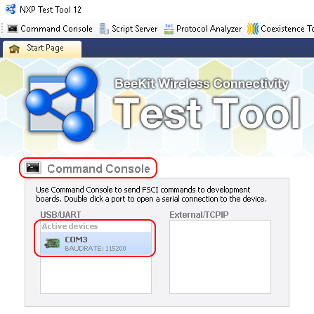
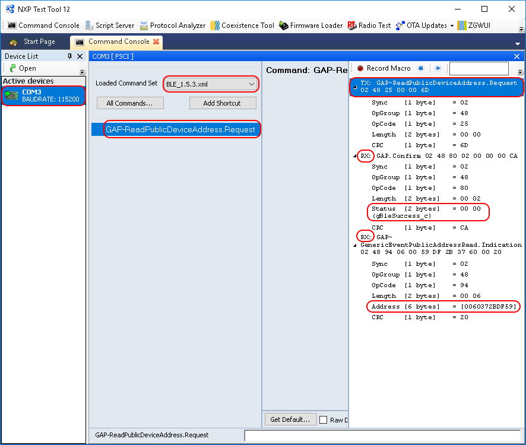

The Bluetooth LE FSCI Black Box demo application is designed to be used via
serial interface. This can be done using the TEST Tool for Connectivity Products –
Command Console application as described below.
- Download the demo application onto a supported board
- Connect the board to a USB port of the PC. The UASB COM port drivers
must be installed properly and a COM port corresponding to the board should be
available.
- Open the Test Tool application and connect to the serial port
corresponding to the board on which the Bluetooth LE FSCI Black Box application
runs. The serial communication parameters are: baud rate 115200, 8N1
Figure 1. Test tool command console serial port selection

- Select the appropriate Test Tool XML file from the drop-down list for
the release being used and send some commands to the application.
Figure 2. FSCI black box command example
